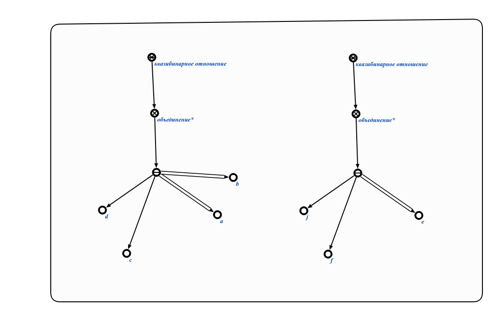
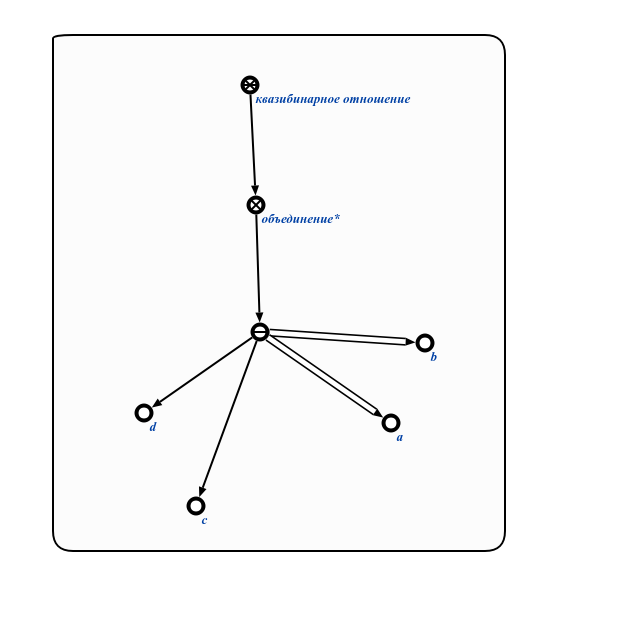

Команда пользовательского интерфейса для проверки на соответствие мощности связок арности отношения предназначена для проверки на соответствие мощности связок арности отношения. Первым входным параметром является знак структуры, в которой будет произведена проверка на соответствие мощности связок арности отношения. Результатом выполнения команды является формирование структуры, содержащей некорректные связки отношения. Пример выполнения команды показан ниже (слева - исходный раздел, справа - сформированная структура):

